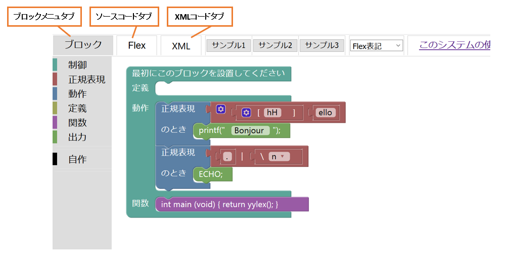

タブの概要
Blocklyには3つのタブが用意されています。ブロックメニュータブ、ソースコードタブ、XMLコードタブです。デフォルトでは、ブロックメニュータブを押したときの状態が表示されています。
タブの紹介
■ブロックメニュータブ
ブロックメニュータブを押すと、ワークスペース部とブロックメニュー部を表示します(図1)。詳細は、第1項を参照。
■ソースコードタブ
ソースコードタブを押すと、作成したプログラムのソースコードを表示します(図2)。タブ名は各プログラミング言語の名称になります。ワークスペース部でブロックを組み合わせて作成したプログラムが、リアルタイムにソースコードに変換され、
このソースコード部でいつでも確認することができます。この機能によって、Blocklyでプログラミングを学んだ学習者がソースコードを記述できるように支援する働きを持ちます。
■XMLコードタブ
XMLコードタブを押すと、作成したプログラムのXML コードを表示します(図3)。ワークスペースで組み合わせたブロックの構造がXML形式で出力され、その出力されたXMLコードをセーブ、ロードすることができます。この機能によって、組み合わせたブロックを保存したり、他の学習者や教員が組み合わせたブロックを自分のワークスペース上に再現することができます。システム開発側に向けた機能です。